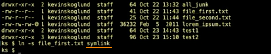
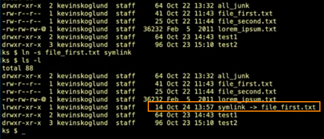
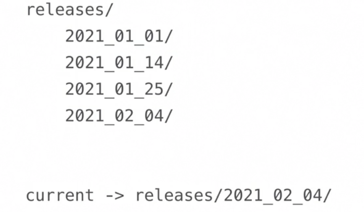
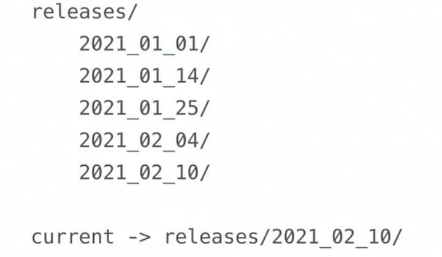

create a symbolic link
ln -s file_name symlink_name
refered to as "sym links"
they are similar to shortcuts and aliases
ln file_name hardlink_name
without the -s option unix will create a hard link, NOT a sym link
hard links work very differently and are rarely used
IMPORTANT NOTE
unlike shortcuts and aliases, a sym link referes to a files' path and Not the actual file
this means the sym link breaks if the file is moved

IMPORTANT NOTE
sym links are very useful when working with files within directories
for example if we have many versions of a project we can make a sym link to the current project
ln -s current releases/2021_02_04
would make a sym link that would bring us to that specific version without having to tranverse to that directory
